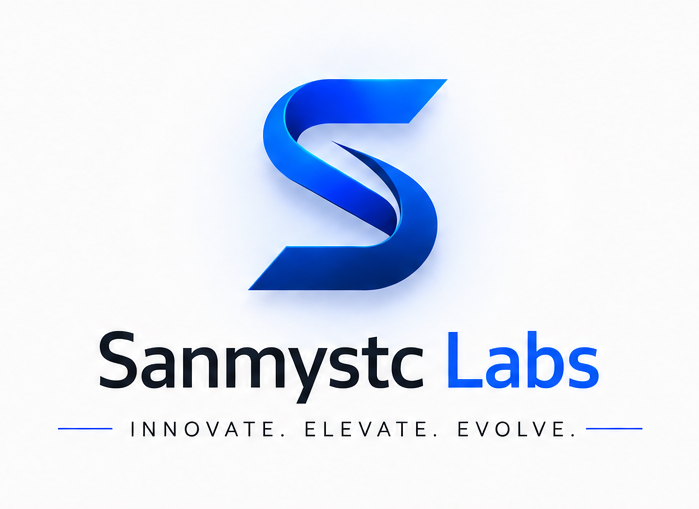

Bridging Business Strategy And AI Implementation
Helping organizations move beyond AI experimentation and create measurable business outcomes through practical strategy, thoughtful design and effective execution.
Why This Work Matters
AI transformation is not simply about introducing new technology. It is about helping organizations create measurable business outcomes through thoughtful strategy, practical implementation and sustainable adoption.
Most organizations struggle because they focus on technology before understanding their business goals. The result is wasted investment, low adoption and limited impact.
The objective is to help organizations move beyond AI experimentation and create real, lasting business value.

Meet The Company
Sanmystc Labs operates at the intersection of business strategy and AI implementation. With experience across industries, we help organizations identify high-impact opportunities, design practical solutions and build scalable Tech-enabled operating models.
We created Sanmystc Labs to serve as the execution platform that supports strategy and implementation initiatives, ensuring that recommendations translate into measurable results.
Our approach is grounded in business reality, not technology hype. We believe that successful AI initiatives require both strategic thinking and practical execution — and that the best solutions are those that people actually use.
Meet The Company
Sanmystc Labs operates at the intersection of business strategy and AI implementation. With experience across industries, we help organizations identify high-impact opportunities, design practical solutions and build scalable Tech-enabled operating models.
We created Sanmystc Labs to serve as the execution platform that supports strategy and implementation initiatives, ensuring that recommendations translate into measurable results.
Our approach is grounded in business reality, not technology hype. We believe that successful AI initiatives require both strategic thinking and practical execution — and that the best solutions are those that people actually use.
A Practical Approach To AI Adoption
Start with business goals
Every AI initiative should begin with a clear understanding of what the business is trying to achieve.
Prioritize measurable outcomes
Focus on initiatives that create tangible business value and can be tracked over time.
Design for adoption
Solutions must be practical, usable and aligned with how people actually work.
Build systems that scale
Create architectures and processes that grow with the organization, not just pilot projects.
Measure impact continuously
Track results, learn from outcomes and refine approaches based on real-world performance.
What Makes Sanmystc Labs Different
Business-first thinking
Technology recommendations are grounded in business context, not vendor pitches or technical trends.
Strategy combined with implementation expertise
We do not just advise — we help execute, ensuring that strategy translates into action.
Focus on practical outcomes
Every engagement is designed to create measurable business impact, not just deliver reports or recommendations.
Independent technology recommendations
We are not tied to any platform or vendor, so our advice is always aligned with your best interests.
Long-term transformation mindset
We build relationships, not transactions. Our goal is to help organizations build lasting AI capability.
Principles That Guide Our Work
Clarity Over Complexity
We simplify complex AI concepts into clear, actionable strategies that everyone can understand and support.
Outcomes Over Hype
We focus on measurable business results, not technology trends or buzzwords.
Practicality Over Trends
We recommend solutions that are realistic, sustainable and aligned with your organization's capabilities.
Partnership Over Transactions
We build long-term relationships based on trust, transparency and shared success.
Frequently Asked Questions
What types of organizations do you work with?
We work with SMB owners, startup founders, enterprise executives and transformation leaders who are ready to move beyond AI experimentation and create measurable business impact.
Do you help with implementation?
Yes. Sanmystc Labs serves as the execution platform, supporting strategy and implementation initiatives to ensure recommendations translate into real results.
Do you provide workshops?
Yes. We offer executive AI workshops, team training programs and AI adoption programs designed to build organizational capability and confidence.
How do engagements typically begin?
Most engagements start with a discovery conversation to understand your goals, challenges and opportunities. From there, we recommend the best path forward.
Can you work alongside internal teams?
Absolutely. We often collaborate with internal teams, providing strategic guidance and implementation support while building internal capability.
Let's Explore What's Possible
Start with a focused conversation about your goals, challenges and opportunities.